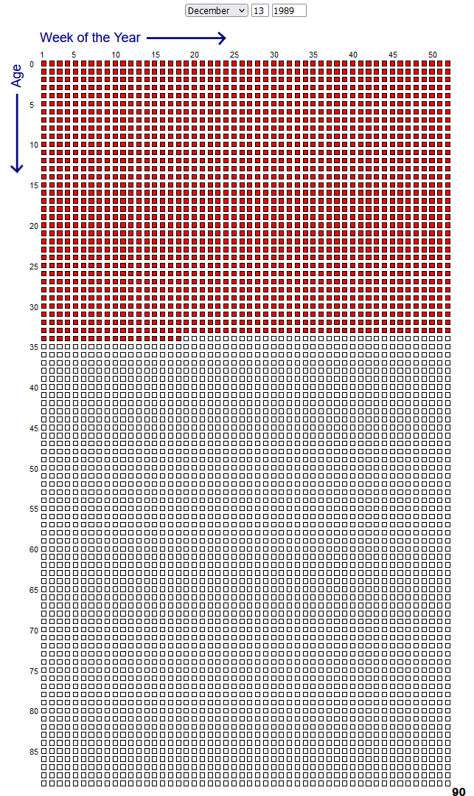

Order not your life as though you had ten thousand years to live. Fate hangs over you. While you live, while yet you may, be good.
- Marcus Aurelius, Meditations
It's ancient and common wisdom that you ought to remember that one day, you will die, and so therefore you ought to live every day you have left as if it could be your last.
It's such ancient and common wisdom, that it's become trite.
My visceral reaction to seeing something like this is to roll my eyes.
I try to catch myself in that reaction, and stop to take this seriously. Deadly seriously. It's a matter of life and death after all. I don't know how many years back, I saw some Reddit post that linked to a website where you would type in your birthdate and the website would tell you how many weeks you had left to live.

The idea was that when you're just living life, it feels like you have an infinite amount of weeks to live. But then, when you lay them all out in front of you, you realize just how finite your weeks are. Like, not just finite in a theoretical sense. You can count them. There they are. Right there. Feels like it would take you maybe 2 minutes to count them all up one by one (probably not true, by the way, unless you're very old). It gets even more tangible if you decide to have the site show you months instead of weeks.
Anyways, seeing this kinda struck a chord with me, so I decided to go ahead and literally count up all the weeks I had remaining (not one by one, mind you, but by rows), mark a little note in my diary, and every day from then on begin each entry with the title "XXXX WEEKS REMAIN", decrementing the count by one every Monday.
And as soon as I started doing that, I felt like I was taking this whole memento mori very seriously. I mean, come on, I was memento-ing my mori every single day.
Despite that, I find that I might not really believe that "XXXX WEEKS REMAIN". If you asked me how many weeks I have left to live on average, I would be able to give you a pretty exact estimation. But I think my estimation would lack sincerity.
You know, I once made a spreadsheet documenting my aptitudes at various domains. For instance, I might have identified "consecutive pushups" as a measure of upper-body strength, and went searching for the mean amount of pushups, and try to identify standard deviations towards and away from the mean. I might have used benchmarks like "beginner, intermediate, advanced" in their absence.
On the one hand, it was really motivating, seeing my numbers go up, on a not-quite-but-honestly-close-enough-to-objective scale, like I was an RPG character. On the other hand it was a fucking extravagant expenditure of time, and I'm frankly not sure if it was worth it or not. Every so often I have to hold council with the different parts of myself and debate whether or not I should pick this thing back up.
It got really out of hand when I started measuring things like my rank in online competitive games. Actually I think that's what triggered my loss of interest in the project.
I mean, it's actually really easy to get rank distributions for a lot of these games. That wasn't the problem. The problem was that I eventually was trying to become proficient or at least competent at way too many things, and I kinda realized that I just didn't really care about how good I was at video games, and then I realized that I should have known better.
You're like ordinary mortals in fearing everything, you're like immortals in coveting everything.
- Lucius Annaeus Seneca, On the Shortness of Life
Seneca put it well. I was trying to master everything as if I was an immortal with an eternity to spend mastering everything. I blame Final Fantasy Tactics. Coveting something immaterial and illuxurious like skills or knowledge is coveting all the same.
And what's worse than the coveting is that I did not act as one would act if they REALLY BELIEVED they were mortal. Someone who REALLY BELIEVES they are mortal would prioritize and not waste time on random bullshit they don't even care about.
WHAT AN ABSOLUTE IDIOT
The problem is that even though Seneca had taught me this lesson, I failed to make it truly a part of me.
It’s good to learn from your failures, but I prefer to learn from the failures of others.
- Jace Beleren on Lay Bare, Wizards of the Coast
See, I live by this. I like talking to people, I like reading and listening to the words of interesting people. I write those words down, and explore my thoughts on them. I go out of my way to think about them. And then... I just don't learn from others. I had to make the mistake myself to really get it.
Any fool can know. The point is to understand.
- Albert Einstein
OKAY EINSTEIN, BUT IT'S NOT THAT SIMPLE. Sure, sometimes you know and you understand all at once. Someone probably had me count two apples, and another two apples, and then count them all together, and then in that moment I both knew and understood that two apples plus two apples makes four apples.
But it wasn't that simple with not being like an immortal in coveting everything, and it doesn't seem to be that simple with memento mori.
Ivan Ilych saw that he was dying, and he was in continual despair.
In the depths of his soul Ivan Ilyich knew that he was dying, but not only was he not accustomed to it, he simply did not, he could not possibly understand it.
The example of a syllogism he had studied in Kiesewetter's logic—Caius is a man, men are mortal, therefore Caius is mortal—had seemed to him all his life to be correct only in relation to Caius, but by no means to himself. For the man Caius, man in general, it was perfectly correct; but he was not Caius and not man in general, he had always been quite, quite separate from all other beings; he was Vanya, with mama, with papa, with Mitya and Volodya, with toys, the coachman, with a nanny, then With Katenka, with all the joys, griefs, and delights of childhood, boyhood, youth. Was it for Caius, the smell of the striped leather ball that Vanya had loved so much? Was it Caius who had kissed his mother's hand like that, and was it for Caius that the silk folds of his mother's dress had rustled like that? Was it he who had mutinied against bad food in law school? Was it Caius who had been in love like that? Was it Caius who could conduct a court session like that?
And Caius is indeed mortal, and it's right that he die, but for me, Vanya, Ivan Ilyich, with all my feelings and thoughts—for me it's another matter. And it cannot be that I should die. It would be too terrible.
- Lev Nikolayevich Tolstoy, The Death of Ivan Ilych
I am worried that I will reach my deathbed and feel the exact same way Ivan did.
Because whenever I hear an old person talk or write about how time goes by really fast and you have to make life count or something, I can nod along and I THINK I understand what they're saying.
I could say "Yes. I completely understand the lesson you're trying to impart to me" under truth serum. Because it's not lying if you actually believe it's the truth and you're just mistaken.
Of course I understand it! I mean, I would probably try to say the same thing to someone younger than me. I've experienced time flying by! An hour as a child feels like a week in adulthood.
Even so, I don't think there is literally any way I could teach a lot of the lessons I learned to my younger self.
Regarding coveting like an immortal, I could time walk back to my past self, explain everything to him, and he would solemnly nod, and genuinely believe that he had learnt the lesson that I meant to teach him. And then he would make the exact same mistake I did years later. Except he'd feel even dumber than I did, because he failed to listen to a literal time traveler.
Ultimately, I think Kierkegaard put it best:
Life can only be understood backwards; but it must be lived forwards.
- Søren Kierkegaard
i hate that things are like this.